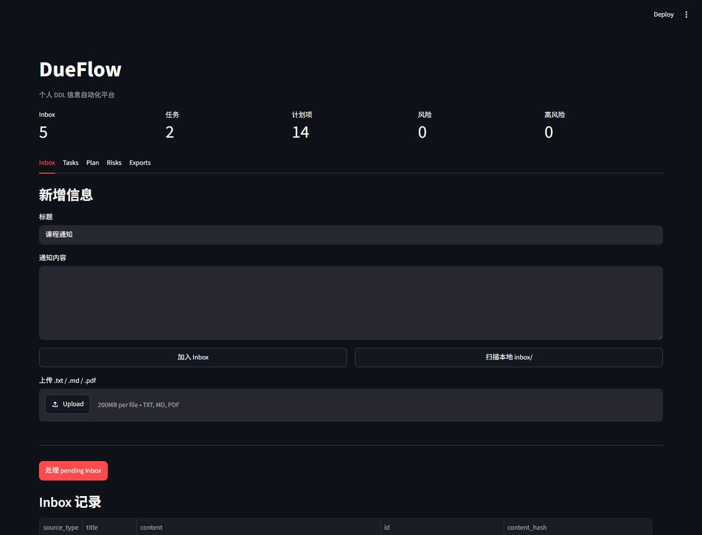

本地存储
SQLite 状态、源文件、备份和生成内容都保存在你配置的路径中。
开源 · 本地优先 · v0.1.1
DueFlow 将通知、截图、文件、粘贴文本和 Webhook 数据整理为结构化任务、倒排计划、 风险检查、提醒与日历导出，并在你的设备上完成整个流程。

从噪声到下一步行动
收集到达的信息，理解它的含义，并获得可以编辑和导出的日程。
导入文本、Markdown、PDF、待 OCR 图片、拖放文件、本地收件箱文件或 Webhook。
结构化截止日期、交付物、提交方式、缺失信息和来源引用。
生成可编辑任务、倒排计划、风险检查、提醒和按优先级排列的下一步。
把结果导出为 Markdown 报告、待办清单、摘要或标准日历文件。
SQLite 状态、源文件、备份和生成内容都保存在你配置的路径中。
计划和导出始终可以编辑；来源引用帮助你复核提取结果。
备份、恢复、诊断、模式检查和可复现门禁支持可靠的本地迭代。
Python、FastAPI、React、Tauri 和 Rust 组件均采用 MIT 许可证。
浏览器即时样例
编辑下方通知，保留一个类似 2026-09-30 的 ISO 日期，即可在当前标签页生成确定性的
样例计划。内容不会上传。首次访问后还可离线使用。
试用完整工作流
默认 mock 提供商具有确定性，首次运行无需账号、令牌或 API 密钥。
processed=3 tasks=3 plans=17 risks=5
$ git clone https://github.com/Ustinian5/DueFlow.git
$ cd DueFlow
$ conda env create -f environment.yml
$ conda run -n dueflow python scripts/run_demo.py构建更从容的一周
查看源码，运行本地演示，并参与塑造 DueFlow 的下一个版本。